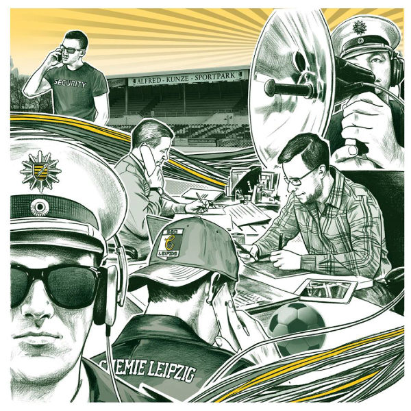
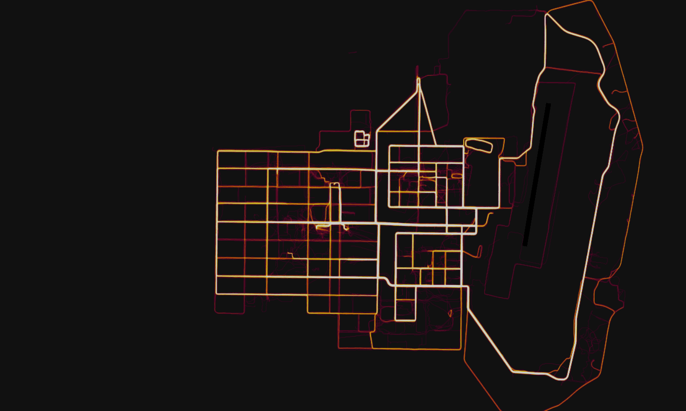

Was ist der Chaos Computer Club e.V. (CCC) ?
- größte europäische HackerInnen-Vereinigung
- Gründung: 1981
- Grundlage: Hackerethik
- Vermittelnde im Spannungsfeld technischer und sozialer Entwicklungen
- Veranstaltungen, Politikberatung, PMs, Publikationen, ...
- Regelmäßig als ExpertInnen beim BVerfG, BT-Ausschüssen, ...
In Stuttgart:
Stammtische, Vortragsreihe, Workshops, Cryptoparties, CmS...
Mehr auf www.cccs.de
Der Fall 'Chemie Leipzig'
Der Fall 'Chemie Leipzig'
 |
- Ermittlungsverfahren wegen §129 StGB
- 2 Verfahren 2013-2016 und 2018
- > 200 Drittbetroffene
- AnwältInnen, ÄrztInnen, ...
- mangels Tatverdachts eingestellt
- Strucktur-Ermittlungen (?)
|
Der Fall 'Chemie Leipzig'
2tes Verfahren - Ermittlungsmethoden
|
- Bestandsdatenauskunft
- Telefonate abgehört
- SMS mitgelesen
- Observationen
- 'Webbasierte Kommunikation' erkannt
|
Der Fall 'Chemie Leipzig'
Was wäre zusätzlich möglich gewesen?
|
- Beschlagnahme von Daten und Geräten
- Quellen-TKÜ
- Online-Durchsuchung
- Funkzellenabfrage
- Handy-Tracking
|
Datensparsam kommunizieren
am Beispiel des Messengers 'Signal'
|
- E2EE für Nachrichtung und (Video-)Telefonate
- Verschwindende Nachrichten
- Kein Online-Backup
- Anbieter weiß (fast) nichts
- ACHTUNG: Nicht anonym!
|
Auswertung von Geräten
Smartphones
|
- Wettlauf von Herstellern vs. Forensik-Firmen
- Ensperren regelmäßig möglich
- (oft) abhängig vom Sperrcode
- Viele Geräte schlecht gesichert
|
Auswertung von Geräten
Laptops / PCs
Unbewusst hinterlassene Daten

Unbewusst hinterlassene Daten
Danke für die Aufmerksamkeit